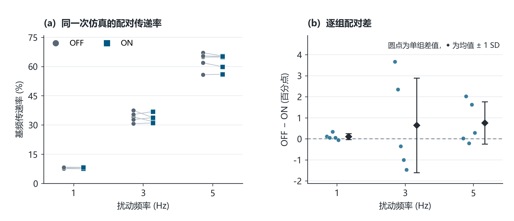
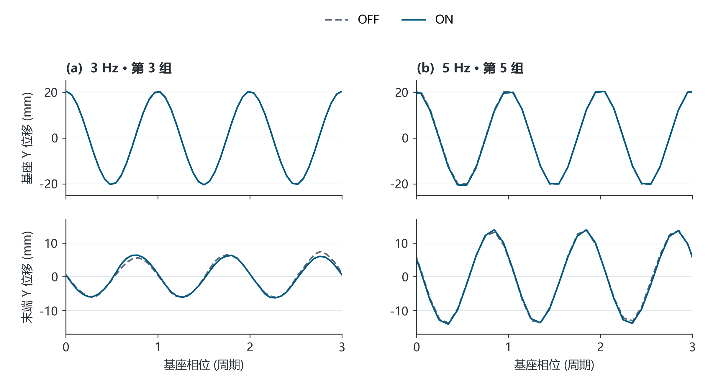
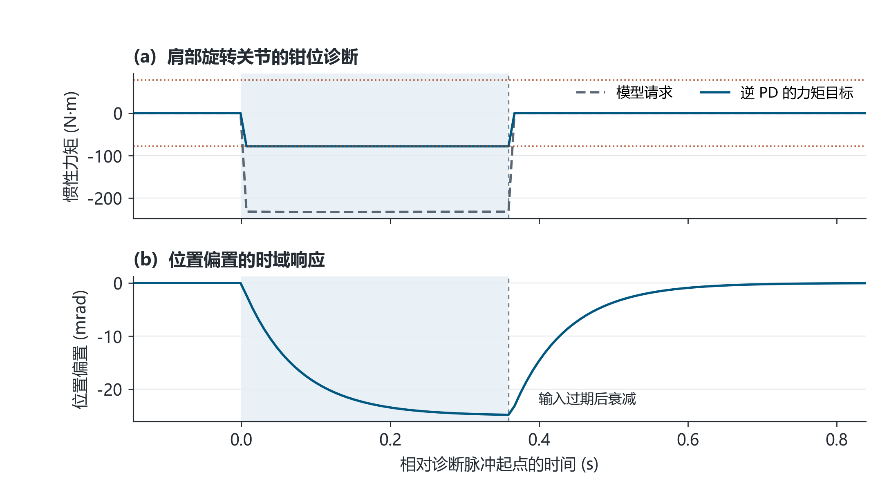

UR5e 基座平移扰动的惯性前馈验证
ROS Noetic · Gazebo 11 · 同一仿真内配对试验 · 2026 年 11 月 19 日
引言
龙门平移时，控制目标是将 UR5e 末端保持在世界坐标系的固定位置。本试验检验在既有前馈反馈回路上加入惯性补偿后，末端沿扰动方向的基频位移是否下降。
方法
由末端零加速度约束求关节参考加速度。含末端负载的 KDL 模型计算参考惯性力矩，并用等效加速度场计算基座耦合力矩。合力矩通过离散逆 PD 换算为位置偏置。逆解受阻尼或关节速度实质限幅时，暂停惯性请求。
在同一次 headless 仿真中保持 SRDF init 附近的世界系目标，施加峰值 20 mm 的 Y 轴扰动。在 1、3、5 Hz 各做五组 OFF→ON，OFF 重映射加速度话题。每条腿取 4 s 整周期窗口，对世界系位移拟合单频、常数项与线性漂移。末端与基座基频幅值之比为传递率，配对差定义为 OFF 减 ON。1 Hz 的解析加速度峰值为 0.79 m/s²，是 5 Hz 的 1/25，用作低加速度对照。
结果
| 频率 (Hz) | OFF (%) | ON (%) | 差值 ± SD (百分点) | 差值范围 (百分点) | 钳位更新数 |
|---|---|---|---|---|---|
| 1 | 8.05 | 7.95 | +0.10 ± 0.14 | -0.06 至 +0.33 | 0 |
| 3 | 34.09 | 33.45 | +0.64 ± 2.25 | -1.47 至 +3.67 | 0 |
| 5 | 63.03 | 62.28 | +0.75 ± 1.01 | -0.21 至 +2.02 | 0 |


正式扫频中记录到 0 次惯性力矩钳位更新。扫频结束后的独立脉冲触发了肩部旋转关节的钳位计数，输入过期后偏置衰减。

讨论
1、3、5 Hz 的配对差分别为 +0.10 ± 0.14、+0.64 ± 2.25 和 +0.75 ± 1.01 个百分点。独立重测（两次开机、六组配对）在 3 Hz 为 +0.13、在 5 Hz 为 +2.96 个百分点。两轮合并共 11 组配对后，5 Hz 为 +1.96 ± 0.70、3 Hz 为 +0.36 ± 0.57、1 Hz 为 −0.04 ± 0.09 个百分点。
本轮与那轮都采用固定的 OFF→ON 顺序。随后又用 ABBA 顺序（每区块 OFF ON ON OFF，线性漂移在区块内精确抵消）做了一轮独立重测：1 Hz 为 −0.61 ± 0.16（3 区块）、3 Hz 为 +0.05 ± 0.62（7 区块）、5 Hz 为 +1.01 ± 1.10（6 区块），三个频率均未在 95% 下分辨得出。
顺序不是两轮幅度不一致的原因。ABBA 实际抵消掉的漂移在 5 Hz 区块上平均仅 +0.21 个点/段（单块可达 ±4，符号随机），所以固定顺序的估计并无实质偏差；且 ABBA 没有减小散布（5 Hz 区块间标准差 2.68，与之前的配对间标准差相同）。游走来自机械臂自身状态，量级两到三个点，是本台架的测量地板。按方差倒数合并两种设计：1 Hz 为 −0.18 ± 0.08、3 Hz 为 +0.22 ± 0.42、5 Hz 为 +1.69 ± 0.59 个百分点。即这一项在 5 Hz 上值一个点的量级，3 Hz 为零，1 Hz 为小幅倒赔——后者是按基座加速度幅值给该项加门限的理由。
ABBA 轮的 68 段中钳位计数全为零，且 34 个 ON 段中 33 个在拟合窗内模型激活率为 100%（唯一例外已被基座幅值筛选剔除）。按 UR5e 的 DH 参数计算，SRDF 的 init 位姿几何雅可比最小奇异值为 0.214、条件数 8.6，是 SRDF 六个具名位姿中最好的，远在 ik_sigma_min 的 0.05 之上，所以抑制率的上限不是位姿条件造成的。
解析加速度用于惯性前馈，世界系反馈仍使用 50 Hz p3d 基座状态，半个采样周期在 3 Hz 约为 10.8°。已安装的 p3d 直接读取 Gazebo 连杆速度。3 Hz 时，速度相对同一位移基频求导的中位相位差为 -0.73°。